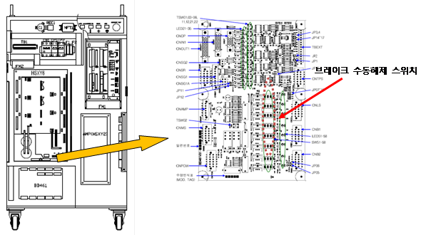
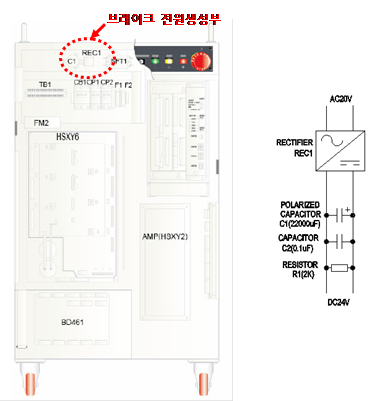
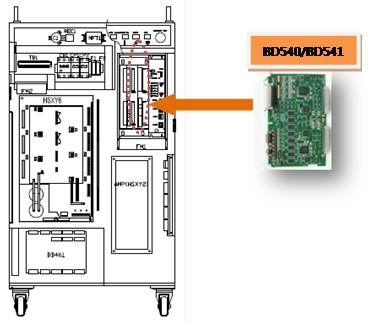
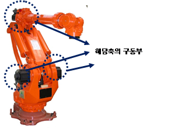

18.1. 개요
모터 또는 구동장치가 무리하게 동작되고 있습니다. 모터 또는 구동장치가 연속 사용 조건보다 무리하게 동작하게 되면 과열과 함께 기구의 수명이 급격히 단축되기 때문에 서보보드는 에러를 감지하고 로봇을 정지시킵니다.
18.2. 원인 및 점검방법
|
1. 부하 조건을 완화하여 주십시오. 2. 로봇 동작 중 충돌요소가 있는지 점검하십시오. 3. 축 브레이크가 정상적으로 작동하는지 확인하십시오. 4. 서보보드를 교체하여 이상여부를 점검하십시오. 5. 구동부가 정상적으로 작동하는지 점검하십시오 |
1. 부하 조건을 완화하여 주십시오
로봇이 정상적으로 동작하다가 과부하에러가 발생하면 부하 조건의 문제인지 아니면 정상 부하조건인데 제어기나 로봇 본체 상의 문제인지를 먼저 확인해야 합니다. 아래의 방법으로 로봇의 사용 부하조건을 완화하여 과부하에러가 해소되는지를 점검합니다.
툴 부하 중량을 저감시킨 상태에서 확인
로봇 대기 시간을 넣거나 로봇 속도를 낮추어 확인
부하조건을 완화하여도 과부하에러가 계속 발생한다면 제어기나 로봇 본체의 문제를 점검해야 합니다.
로봇의 부하는 툴 중량뿐만 아니라 이너셔의 크기도 중요합니다. 각 로봇별 허용 이너셔는 해당 로봇의 보수매뉴얼을 참고 바랍니다. 아래에는 HX165 로봇의 예입니다.
그림 5.62 HX165 로봇의 손목축 허용 이너셔
2. 로봇 동작 중 충돌요소가 있는지 점검하십시오.
로봇 작업 영역에 로봇과 간섭 또는 충돌하는 부분이 있는지 확인하십시오. 로봇이 다른 기구물과 간섭이 발생할 경우 에러가 발생할 수 있습니다. 이 경우, 작업 프로그램을 수정하여 간섭이 발생하지 않도록 합니다.
3. 축 브레이크가 정상적으로 작동하는지 확인하십시오.
해당 축 브레이크의 해제기능에 문제가 있거나 브레이크 해제전압의 이상일 수 있습니다.
1) 개별 축 브레이크 해제 이상 점검
모터전원을 제거한 후(모터OFF) 브레이크 수동스위치를 사용하여 해당 축의 브레이크가 해제되는지 확인하십시오. 브레이크 해제시 모터에서 나는 소리로 확인할 수 있습니다.
| 경고(Warning) 브레이크 해제와 동시에 로봇축이 낙하할 가능성이 있으므로 주의하십시오. |

2) 브레이크용 전원이상 점검.
“E0012 브레이크 전원이상”이라는 메시지가 같이 발생하였다면 브레이크 전원장치에 이상이 있는 것입니다.
제어기 상단에 커패시터와 Rectifier가 설치되어 있습니다. 20V의 전원으로부터 DC24V의 전원을 생성합니다. 테스터를 사용하여 DC24V가 생성되고 있는지 확인하십시오.

4. 서보보드를 교체하여 이상여부를 확인하십시오.
서보 보드를 교체한 후 에러가 발생하지 않으면 서보보드의 불량입니다. 서보 보드를 정상품으로 교체하여 주십시오.

5. 구동부가 정상적으로 작동하는지 확인하십시오.
해당축의 구동부(모터, 감속기)가 정상적으로 작동하는지 확인하십시오.
